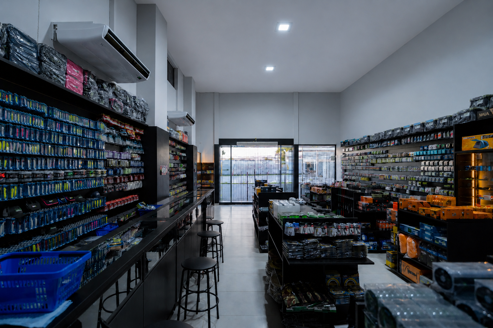

Blue Pro Fishing — Pesca, Náutica e Camping em Palmas - TO
BLUE PRO FISHING • PALMAS - TO
Conheça a Blue Pro Fishing
A maior loja de pesca em Palmas - TO, feita por quem vive a pesca. Equipamentos, náutica, camping e atendimento especializado para quem busca experiência, confiança e conhecimento de verdade.
Falar no WhatsAppEQUIPAMENTOS DE PESCA
Equipamentos de pesca em Palmas - TO para a sua pescaria
Varas, carretilhas, iscas, linhas e acessórios selecionados por quem entende de pesca.


O que fazemos
Camping, Pesca, Náutica em Palmas - TO
Oferecemos um ecossistema completo para suas necessidades náuticas e de pesca, com a qualidade e garantia que você merece.

ACAMPAMENTO, PESCA E ACESSÓRIOS
Equipamentos para sua próxima pescaria
Varas, molinetes, carretilhas, iscas, linhas e acessórios para sua pescaria.
Conhecer
EMBARCAÇÕES E NÁUTICA
Da escolha do barco à manutenção
Barcos, motores e soluções para aproveitar melhor a vida na água.
Conhecer
CAMPING E EXPERIÊNCIAS
Para quem vive a pesca além do equipamento
Camping e pesca em Palmas - TO e região.
ConhecerSOBRE A BLUE PRO FISHING
Uma loja de pesca em Palmas feita por quem vive a pesca.
A Blue Pro Fishing nasceu em PALMAS - Tocantins, da paixão pela pesca e da experiência de quem realmente vive esse universo. Mais do que uma loja de pesca, somos um ponto de encontro para quem busca bons equipamentos, conhecimento, confiança e histórias para levar à próxima pescaria.
Aqui, pesca esportiva, náutica, camping e aventura fazem parte da mesma experiência, com produtos selecionados e atendimento de quem conhece na prática aquilo que oferece.

Dúvidas
Perguntas frequentes
Onde fica a Blue Pro Fishing?
Estamos na Q. ACSU SE 20, Avenida LO 03, Conjunto 02, Lote 18, Bloco 02, Plano Diretor Sul, Palmas - TO, 77020-456.
Como falar com a equipe pelo WhatsApp?
Fale conosco pelo WhatsApp (63) 99256-9790.
A Blue Pro trabalha com artigos de pesca?
Sim. A loja trabalha com artigos e equipamentos de pesca.
A Blue Pro também trabalha com embarcações e náutica?
Sim. Também atuamos com embarcações e náutica.
Onde posso acompanhar os conteúdos da Blue Pro?
Como chegar até a loja?
Use o mapa desta página ou abra a localização no Google Maps.
VISITE A BLUE
Venha conhecer a Blue Pro Fishing em Palmas
Visite nossa loja, fale com a equipe ou encontre a Blue nas redes sociais.
Fale com a Blue Pro Fishing
Interessado em artigos de pesca, embarcações, náutica ou camping? Fale com nossos especialistas.
Plano Diretor Sul
Palmas - TO, 77020-456